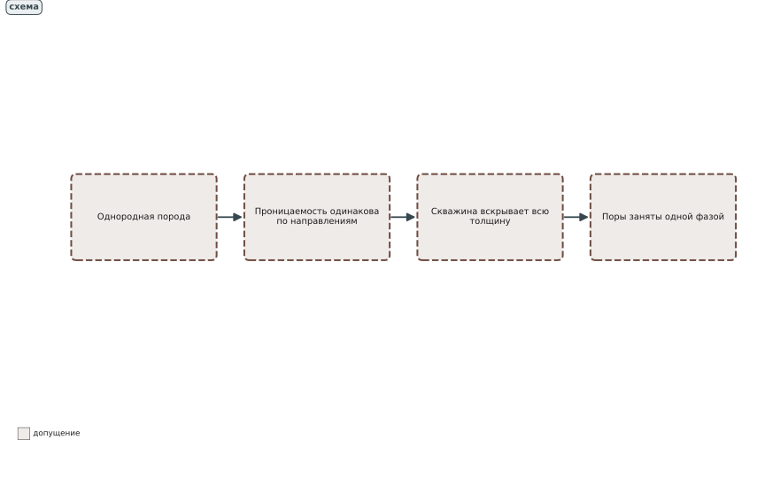
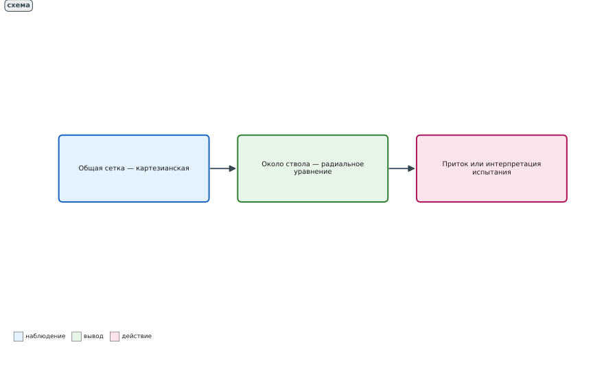

В книге: «Вывод основного дифференциального уравнения радиального потока» стр. 75–76
≈ 6 мин⟳ Интерактивтрудность: пространство + формализм
Суть
У ствола скважины поток можно описывать в радиальной геометрии — отложив расстояние от его оси.
Это отдельное приближение, даже если модель всего пласта использует прямоугольную сетку.
Интерактив: как это происходит


1 / 6
Всю окрестность считаем однородной.
Допущения: Схемы и относительные оси условны; реальные замеры не использованы..
Как это работает
Как работает модель
Радиальная форма описывает окрестность скважины. Решения с разными граничными и начальными условиями нужны для испытаний и расчёта притока. стр. 75
«The basic differential equation will be derived in radial form thus simulating the flow of fluids in the vicinity of a well»
«Analytical solutions of the equation can then be obtained under various boundary and initial conditions for use in the description of well testing and well inflow, which have considerable practical application in reservoir engineering»
Математика и наблюдения
Аналитические картезианские решения автор считает менее полезными для промысловой практики. При численном моделировании чаще используют прямоугольную сетку. Приток в ствол или из него всё равно описывают радиальными уравнениями. стр. 75
«This is considered of greater importance than deriving the basic equation in cartesian coordinates since analytical solutions of the latter are seldom used in practice by field engineers»
«In numerical reservoir simulation, however, cartesian geometry is more commonly used but even in this case the flow into or out of a well is controlled by equations expressed in radial form such as those presented in the next four chapters»
Практика
Проницаемость: Способность породы пропускать жидкость или газ. В исходной модели свойства породы считают однородными. Проницаемость принимают одинаковой по всем направлениям. Скважину считают открытой на всю толщину пласта. Это обеспечивает радиальную геометрию. Предполагают, что поры полностью заняты одной фазой. стр. 75–76
«The reservoir is considered homogeneous in all rock properties and isotropic with respect to permeability.»
«The producing well is completed across the entire formation thickness thus ensuring fully radial flow.»
«The formation is completely saturated with a single fluid.»
схема
Однородный пласт → Вскрытие всей толщины → Радиальная модель притока.
Класс B · схема · нарисовано кодом · стр. 75
Цифры и условия
В исходной модели свойства породы считают однородными. Проницаемость принимают одинаковой по всем направлениям. стр. 75
Скважину считают открытой на всю толщину пласта. Это обеспечивает радиальную геометрию. стр. 75
Предполагают, что поры полностью заняты одной фазой. стр. 76
Что это значит для данных по книге
Радиальную геометрию применяют для расчёта притока и интерпретации испытаний около ствола, в том числе как скважинное подусловие сеточной модели.
Вход
Радиальная форма описывает окрестность скважины.
Выход
Пласт полностью насыщен одной фазой.
Где ломается
Картезианская сетка численной модели и закон притока около ствола не обязаны иметь одну геометрию.
Где здесь ручной труд специалиста
Входные данные
Радиальная форма описывает окрестность скважины.
Ручные шаги
Радиальную геометрию применяют для расчёта притока и интерпретации испытаний около ствола, в том числе как скважинное подусловие сеточной модели.
Точки суждения
Картезианская сетка численной модели и закон притока около ствола не обязаны иметь одну геометрию.
Время
Трудозатраты в источнике не оценены.
Типичные ошибки
Применить формулу, не проверив её граничные условия и допущения.
Аналогия модель
Прямоугольная сетка сервиса может пользоваться отдельной локальной моделью узла.
Где аналогия перестаёт работать: Радиальную симметрию здесь задают физические допущения о пласте и скважине.
Рисунки книги к этому шагу по книге
Рис. 5.1. Fig. 5.1 Radial flow of a single phase fluid in the vicinity of a producing well. стр. 76(не перерисован — смотрите в книге)
Новые понятия
радиальный поток (radial flow)
Поток направлен к скважине или от неё вдоль радиусов; характер движения одинаков по всем направлениям вокруг оси. стр. 75модель
изотропия (isotropy)
Свойство не меняется с направлением. стр. 75модель
проницаемость (permeability)
Способность породы пропускать жидкость или газ. стр. 75модель
граничное условие (boundary condition)
Правило на краю области: например, запрет на переток или заданное давление. стр. 75модель
начальное условие (initial condition)
Распределение давления в момент начала расчёта. стр. 75модель
Проверь себя
Один ответ
Верный ответ: Да, форма модели у ствола может отличаться от сетки всего пласта
Все утверждения шага с дословной цитатой автора и страницей книги (по PDF).
Радиальная форма описывает окрестность скважины. наблюдение
«The basic differential equation will be derived in radial form thus simulating the flow of fluids in the vicinity of a well»
Решения с разными граничными и начальными условиями нужны для испытаний и расчёта притока. наблюдение
«Analytical solutions of the equation can then be obtained under various boundary and initial conditions for use in the description of well testing and well inflow, which have considerable practical application in reservoir engineering»
Аналитические картезианские решения автор считает менее полезными для промысловой практики. наблюдение
«This is considered of greater importance than deriving the basic equation in cartesian coordinates since analytical solutions of the latter are seldom used in practice by field engineers»
В численном моделировании чаще применяют картезианские координаты, но в ствол или из него поток регулируется радиальными уравнениями. наблюдение
«In numerical reservoir simulation, however, cartesian geometry is more commonly used but even in this case the flow into or out of a well is controlled by equations expressed in radial form such as those presented in the next four chapters»
Свойства породы однородны, проницаемость изотропна. допущение
«The reservoir is considered homogeneous in all rock properties and isotropic with respect to permeability.»
Скважина открыта на всю толщину, чтобы поток был радиальным. допущение
«The producing well is completed across the entire formation thickness thus ensuring fully radial flow.»
Пласт полностью насыщен одной фазой. допущение
«The formation is completely saturated with a single fluid.»
Исходный текст урока
Стр. 75 · 5.2 DERIVATION OF THE BASIC RADIAL DIFFERENTIAL EQUATION
The basic differential equation will be derived in radial form thus simulating the flow of fluids in the vicinity of a well. Analytical solutions of the equation can then be obtained under various boundary and initial conditions for use in the description of well testing and well inflow, which have considerable practical application in reservoir engineering. This is considered of greater importance than deriving the basic equation in cartesian coordinates since analytical solutions of the latter are seldom used in practice by field engineers. In numerical reservoir simulation, however, cartesian geometry is more commonly used but even in this case the flow into or out of a well is controlled by equations expressed in radial form such as those presented in the next four chapters. The radial cell geometry is shown in fig. 5.1 and initially the following simplifying assumptions will be made.
Стр. 75 · 5.2 DERIVATION OF THE BASIC RADIAL DIFFERENTIAL EQUATION
a) The reservoir is considered homogeneous in all rock properties and isotropic with respect to permeability.
Стр. 75 · 5.2 DERIVATION OF THE BASIC RADIAL DIFFERENTIAL EQUATION
b) The producing well is completed across the entire formation thickness thus ensuring fully radial flow.
Стр. 76 · 5.2 DERIVATION OF THE BASIC RADIAL DIFFERENTIAL EQUATION
c) The formation is completely saturated with a single fluid.
Стр. 76 · 5.2 DERIVATION OF THE BASIC RADIAL DIFFERENTIAL EQUATION
Fig. 5.1 Radial flow of a single phase fluid in the vicinity of a producing well.